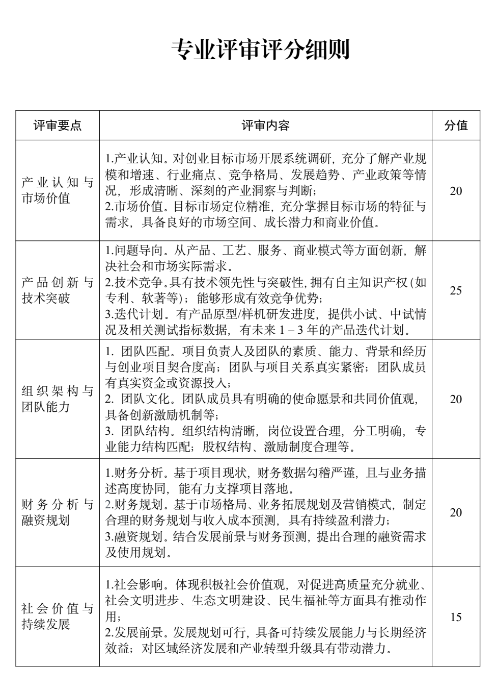
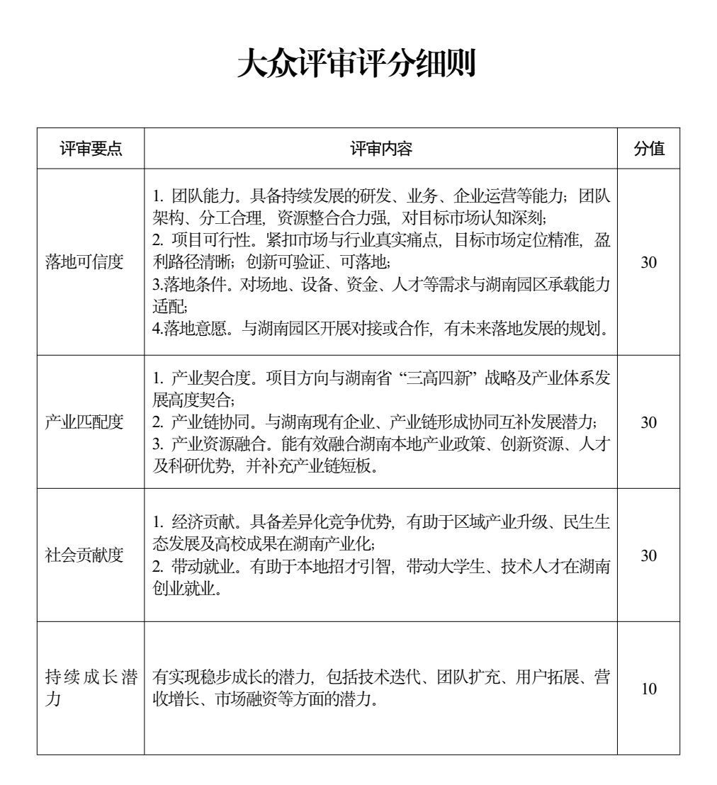
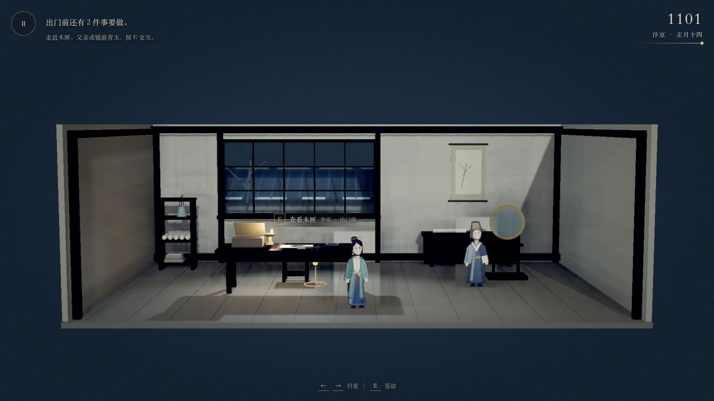

当前得分，依据现有材料暂计
文化内容与研发原型已有基础；市场、财务、团队经营和湖南落地的证据仍有明显缺口。
内部保守自评，非官方评分或获奖预测。待核实资料暂计低分或0分，不等于真实能力为0；得分率不代表游戏研发完成度。
| 官方评审大项 | 当前 / 满分 | 得分率 | 初始基线 |
|---|
研发状态：按实际验收记录
- 已核验 第三章封面进入家中、木匣互动；23项剧情、存档与香囊物理测试通过。
- 待验收 最新整章、全部关键分支、手机端与视觉终验。
- 最终范围 阶段一001—007七章连续可玩，当前第三章为施工里程碑。
分数、准备度与目标怎样区分
公开阅读版：所有读者默认看到2026年10月22日的初评基线。分数、备注与任务修改仅存本人浏览器，不会同步给其他人；跨设备可导出、导入JSON。
专业五项合计100分，大众四项合计100分，严格沿用两张细则。23个子项的拆分满分属于本报告内部规则。
衡量现有材料能支持多少评分主张。初始专业24分、大众9分；修改后保留基线对照，缺失事实仍应补证。
独立估计该子项证据的准备程度，0—100%。它与得分分开记录，也不等于游戏开发进度。
只表示补齐列明证据后的内部复评目标。完成任务不自动加分，最终仍需重新检查证据与质量。
现场结构模拟 = 专业自评分 × 70% + 大众自评分 × 30%。
仅用于理解现场决赛权重；网络初评、复评中的AI占比属于另一套评审安排。本页不模拟AI评审。
内部评分与准备度标尺
自评分：0分＝当前未见对应材料；约25%＝有方向或零散依据；约50%＝有部分可核查成果；约75%＝证据较完整但仍有关键缺口；满分＝该子项所有主张已有充分证据。各档为内部判断辅助，不是官方评分档位。
准备度：0%＝资料待建立；25%＝方向与零散材料；50%＝主要材料已有、验证不完整；75%＝核心证据齐备、待交叉核验；100%＝本轮所需证据完整并已复核。初值属于保守估计。
逐项核查
23个子项：分数、依据与交付
没有符合条件的评分项。
补齐任务与下一阶段复评
优先补齐已经存在但未入档的事实，再完成当前切片验收和需求验证。勾选任务只记录交付状态，不自动改变自评分。
官方资料与项目证据
两张评分原图按用户提供的附件保存。公开版保留内部项目证据的名称与摘要，原始项目文档未随站点发布。正文始终区分已实现、规划与未见材料；图片是视觉或功能证据，不替代商业验证。



- 当前产品范围与里程碑（内部材料）
- 当前项目交接（内部材料）
- 总体产品策划案（内部材料）
- 代码、测试与验收边界（内部材料）
- 第三届正式通知与附件
- 金种子杯官方平台